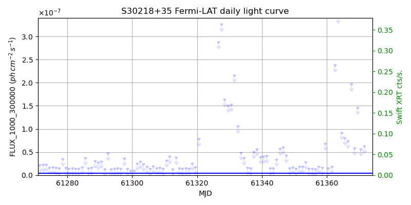

LAT Lightcurve site: https://fermi.gsfc.nasa.gov/ssc/data/access/lat/msl_lc/source/S3_0218p35
Swift site: https://www.swift.psu.edu/monitoring/source.php?source=S30218+35
NED: Query
Time of last update of this page: UT: 2026-11-20 16:12 (MJD: 61364.675)
| Property | Value |
|---|---|
| R.A. | 2:21:05.52 |
| Dec. | 35:56:13.2 |
| z | 0.944 |
| 3FGL SpectrumType | PowerLaw |
| 3FGL PL Index | 2.28 |
| 3FGL Flux_100_300000 | 8.90e-08 1 / (s cm2) |
| 3FGL Flux_1000_300000 | 4.65e-09 1 / (s cm2) |
| 3FGL Flux >200 GeV | 5.21e-12 1 / (s cm2) |
| 3FGL Extrap. Crab >200 GeV | 0.02 |
| 3FGL Flux After EBL Absorption >200GeV | 9.60e-14 1 / (s cm2) |
| 3FGL EBL Crab Fraction >200GeV | 0.00 |
| MJD | dMJD | Flux | dFlux | Frac3FGL | FracCrab>200GeV | EBLFracCrab>200GeV |
|---|---|---|---|---|---|---|
| 61359.50 | 0.50 | 2.23e-07 | 0.00e+00 | 0.00 | 0.00 | 0.00 |
| 61360.50 | 0.50 | 2.72e-07 | 0.00e+00 | 0.00 | 0.00 | 0.00 |
| 61361.50 | 0.50 | 1.61e-07 | 0.00e+00 | 0.00 | 0.00 | 0.00 |
| 61362.50 | 0.50 | 4.70e-06 | 0.00e+00 | 0.00 | 0.00 | 0.00 |
| 61363.50 | 0.50 | 8.00e-07 | 0.00e+00 | 0.00 | 0.00 | 0.00 |

| MJD | dMJD | Flux | dFlux | Frac3FGL | FracCrab>200GeV | EBLFracCrab>200GeV |
|---|---|---|---|---|---|---|
| 61328.50 | 3.50 | 3.20e-07 | 0.00e+00 | 0.00 | 0.00 | 0.00 |
| 61335.50 | 3.50 | 3.02e-08 | 5.72e-09 | 0.34 | 0.01 | 0.00 |
| 61342.50 | 3.50 | 3.92e-08 | 0.00e+00 | 0.00 | 0.00 | 0.00 |
| 61349.50 | 3.50 | 1.19e-07 | 0.00e+00 | 0.00 | 0.00 | 0.00 |
| 61356.50 | 3.50 | 3.96e-08 | 0.00e+00 | 0.00 | 0.00 | 0.00 |

| MJD | dMJD | Flux | dFlux | Frac3FGL | FracCrab>200GeV | EBLFracCrab>200GeV |
|---|---|---|---|---|---|---|
| 61359.50 | 0.50 | 6.87e-08 | 0.00e+00 | 0.00 | 0.00 | 0.00 |
| 61360.50 | 0.50 | 1.47e-08 | 0.00e+00 | 0.00 | 0.00 | 0.00 |
| 61361.50 | 0.50 | 1.89e-08 | 0.00e+00 | 0.00 | 0.00 | 0.00 |
| 61362.50 | 0.50 | 2.38e-07 | 0.00e+00 | 0.00 | 0.00 | 0.00 |
| 61363.50 | 0.50 | 3.44e-07 | 0.00e+00 | 0.00 | 0.00 | 0.00 |

| MJD | dMJD | Flux | dFlux | Frac3FGL | FracCrab>200GeV | EBLFracCrab>200GeV |
|---|---|---|---|---|---|---|
| 61328.50 | 3.50 | 3.08e-08 | 0.00e+00 | 0.00 | 0.00 | 0.00 |
| 61335.50 | 3.50 | 9.98e-09 | 3.58e-09 | 2.15 | 0.05 | 0.00 |
| 61342.50 | 3.50 | 1.37e-08 | 0.00e+00 | 0.00 | 0.00 | 0.00 |
| 61349.50 | 3.50 | 1.02e-08 | 0.00e+00 | 0.00 | 0.00 | 0.00 |
| 61356.50 | 3.50 | 7.82e-09 | 0.00e+00 | 0.00 | 0.00 | 0.00 |
--------------------------------------------------------- Using user-supplied coords: 2:21:05.52 35:56:13.2 2000 --------------------------------------------------------- FLWO UT night of: 2026-11-21 Local Sid. @ Midnight: 03:37 Sunset (-15.0) (local, UT): 18:33 01:33 Sunrise (-15.0) (local, UT): 05:47 12:47 Moonrise (local, UT): Moonset (local, UT): 03:40 10:40 Moon phase: 0.85 --------------------------------------------------------- AzTime LSID UT Obj_el Obj_az Mn_el Mn_az Sep. --------------------------------------------------------- 18:33 22:09 01:33 38.1 66.7 47.9 117.4 37.6 19:03 22:39 02:03 44.0 68.5 53.3 125.0 37.4 19:33 23:09 02:33 50.0 70.1 58.2 134.7 37.2 20:03 23:39 03:03 56.1 71.2 62.3 146.9 37.0 20:33 00:09 03:33 62.1 71.8 65.1 162.1 36.8 21:03 00:39 04:03 68.2 71.3 66.3 179.7 36.6 21:33 01:09 04:33 74.2 68.9 65.4 197.5 36.4 22:03 01:39 05:03 80.0 60.9 62.9 213.2 36.2 22:33 02:09 05:33 84.8 30.7 59.0 225.9 36.0 23:03 02:39 06:03 84.4 322.3 54.2 235.9 35.8 23:33 03:09 06:33 79.3 297.4 48.9 243.9 35.7 00:03 03:39 07:03 73.4 290.6 43.2 250.4 35.5 00:33 04:10 07:33 67.4 288.5 37.3 255.9 35.3 01:03 04:40 08:03 61.3 288.3 31.2 260.7 35.0 01:33 05:10 08:33 55.2 288.9 25.1 265.1 34.8 02:03 05:40 09:03 49.2 290.1 19.0 269.2 34.6 02:33 06:10 09:33 43.2 291.7 12.9 273.0 34.4 03:03 06:40 10:03 37.3 293.5 6.8 276.9 34.2 03:33 07:10 10:33 31.5 295.7 1.0 280.7 33.9 04:03 07:40 11:03 25.8 298.0 -4.9 284.7 33.7 04:33 08:10 11:33 20.2 300.7 -11.1 288.8 33.4 05:03 08:40 12:03 14.8 303.5 -16.8 293.2 33.2 05:33 09:10 12:33 9.6 306.7 -22.3 298.1 32.9 05:47 09:25 12:47 7.2 308.3 -24.8 300.5 32.8 --------------------------------------------------------- Dark hours >55 deg.: 0.00